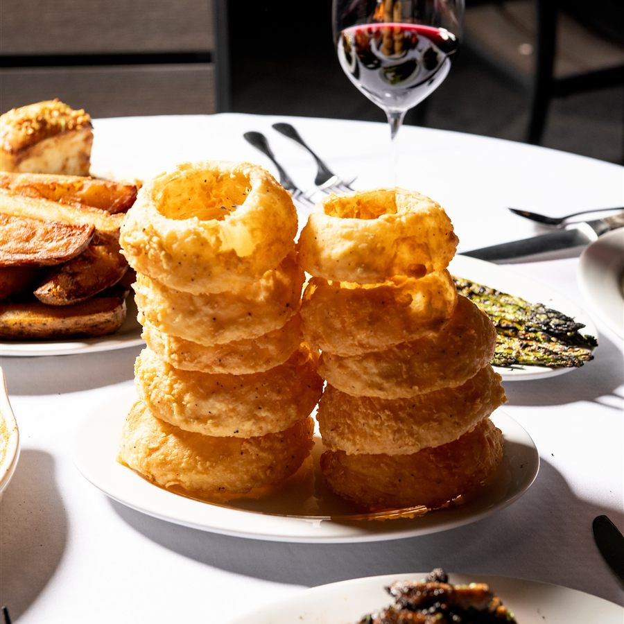
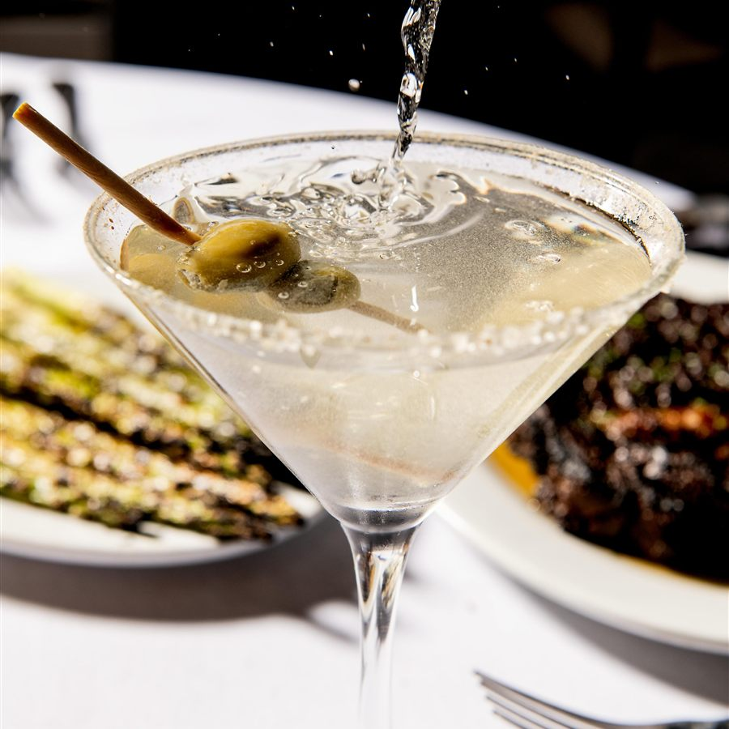

What the best person in every position actually does — written so it can be hired against, coached against, and promoted against.
An A player is not just someone who is good at their job. It is someone who raises the standard of everyone working around them. Two quick tests tell you who they are: the rehire test — if they gave notice tomorrow, would you fight to keep them? — and the clone test — if the whole staff worked exactly like this person, would the restaurant be busier or emptier in six months?
A
Raises the bar. Same standard every shift, coachable, team-first, guests and coworkers both want them there. You would fight to keep them.
B
Carries the job. Reliable and solid — the backbone of the schedule. Worth investing in, because most A players are B players somebody developed.
C
Does the minimum. Needs constant supervision and quietly lowers the standard for everyone else. Coach up fast, or coach out.


Recent posts · @newyorkprime
The Instrument
How to Score It
The same page that defines the standard is the tool for grading it — one number per behavior, from shifts actually observed.
3
Raises the bar. Models the behavior and visibly lifts the people working around them.
2
Meets it. Shows the behavior on most shifts without being reminded.
1
Not yet. Needs reminding, or the behavior isn’t there — this bullet becomes the coaching focus.
Roll-up: average the General section and the role section separately, then convert — A = 2.5 or higher · B = 1.8–2.4 · C = below 1.8. The overall grade is the lower of the two: role skill never outruns the entry fee.
Cadence: new hires at 30, 60, and 90 days; everyone quarterly. Every review names one strength to keep and one focus bullet to grow, graded from shifts observed this period with specific moments cited — never from reputation. A “C” starts a dated coaching plan under company policy, so no one is ever surprised by their review.
Every Position
General
The non-negotiables. None of the role-specific skill below matters without these — this is the entry fee.
Reliability first. Early, in full uniform, clean, and ready at shift start. No-shows and chronic call-outs cancel out every other strength on this page.
Same standard every shift. A dead Tuesday at 5 p.m. gets the same effort and polish as a packed Saturday at 8. Consistency is the whole definition of professional.
Team-first, always. Full hands in, full hands out. Never says “not my table,” “not my section,” or “not my job.”
Works with anyone. Meshes with every personality on the schedule — quiet or loud, brand-new or twenty-year veteran, front or back of house. No cliques, no feuds, no “I can’t work with them” — they adjust their own style so the shift works.
Owns mistakes fast. Says it, fixes it, tells a manager. No hiding, no excuses, no blaming the kitchen, the floor, or the guest.
Communicates openly. Problems, conflicts, mistakes, and needs get said early, directly, and to the right person — server to kitchen, host to floor, staff to manager — and they listen the same way. Nothing bottled up, nothing a manager finds out later that could have been said now.
Calm under fire. The busier it gets, the more focused they get. Never spreads panic, never snaps at a teammate in front of guests.
Coachable without ego. Takes correction, applies it, and doesn’t need to hear the same thing twice.
Accepts change — and works to understand it. When a new standard, menu, policy, or procedure comes down from the top, an A player gets on board, asks questions to understand the why, and gives it a real chance on the floor. Feedback goes up through a manager — not sideways as grumbling in the side station.
Guest-first reflex. Any guest problem within reach becomes their problem until it is solved or handed to a manager — regardless of whose table it is.
Clean as they go. Respects the building, the equipment, and the uniform. Leaves every station better than they found it.
Honest, period. With money, with time, with product, with mistakes.
Makes others better. Trains new people willingly, sets the tone in the room, and never poisons the shift with gossip or negativity.
The Test
If the entire crew worked exactly like this person, would you be busier or emptier in six months?
Front of House
Server
A professional salesperson and the host of their own section — not an order-taker.
MovesCheck average · Comp % · Repeat guests & reviews
Knows the menu cold. Every cut, temp, portion, side, sauce, and price — and can explain the difference between the ribeye and the strip with confidence. Knows the wine list well enough to pair by taste and by budget.
Sells without pressure. Builds the check with appetizers, wine, sides, dessert, and after-dinner drinks — and the guest feels taken care of, never hustled. Highest check average in the building with zero complaints about pushiness.
Temps are sacred. Repeats every temp back, rings it right, and checks the cut at the table after it lands — catching the kitchen’s mistake before the guest ever does.
Reads the table. Anniversary, business dinner, regulars, tourists — adjusts pace, conversation, and timing to match. Knows when to be present and when to be invisible.
Owns the timing. Fires courses so nothing dies in the window and no table sits staring at empty plates. The meal has a rhythm because the server built one.
Table maintenance is automatic. Pre-bussing, crumbing, refills, fresh silver between courses — the table always looks like it was just set.
Never walks empty-handed. Runs food and drinks for any table in the building, and watches the neighboring sections without keeping score.
Handles problems on the spot. Wrong temp or an unhappy guest: apologize, fix it immediately, loop in a manager — and the guest leaves planning their next visit instead of writing a review.
Clean money. Accurate ringing, correct checks, splits handled right, cash to the penny.
Sidework done right without being checked on — opening, running, and closing.
The Test
Do guests ask for them by name — and do their teammates want to work next to them?
Back of House
Cook
Consistency you can build a menu on. The guest never knows who cooked their steak — and never needs to.
MovesTicket times · Refire rate · Food cost
Nails temps, every time. Medium-rare is medium-rare at 6:00 and at 9:45, on the first steak of the night and the two-hundredth.
Every plate matches the standard. Wouldn’t send anything they wouldn’t proudly eat themselves — and pulls a plate that misses rather than hoping it slides.
Fast and right. Keeps ticket times down through the push without cutting a single corner. Speed that costs quality isn’t speed.
Station always ready. Prepped to par, backups where they belong, never caught short mid-rush.
Food safety is a reflex. Dates, labels, rotation, holding temps, gloves, cross-contamination — done automatically, not because someone’s watching.
Communicates loud and early. Calls back orders, flags long tickets, 86’s items before the floor sells them, and tells the expo or a manager about a problem before it reaches a table.
Treats product like money. Exact portions, rare refires, low waste — because food cost is the difference between a good month and a bad one.
Moves between stations. Broiler, sauté, fry, pantry — goes where the night needs them without complaint.
Works the problem in the weeds. No thrown tongs, no yelling at servers, no melting down — just the next ticket, done right.
Teaches the standard. Shows the new cook how it’s done here instead of hoarding knowledge.
The Test
When they’re on the line, do the managers stop worrying about the kitchen?
Front of House
Host
Runs the door like a control tower — the first impression, the last impression, and the pace of the entire night.
Warm within seconds. Every guest greeted like they were expected, every departure gets a genuine goodbye. Never a flat “how many?” with dead eyes.
Owns the book. Reservations accurate, waitlist honest, quotes real times and then beats them. Trust at the door is the restaurant’s trust.
Seats with the whole building in mind. Balances server sections and the kitchen’s pace — never slams one station or buries the line to empty the lobby faster.
Knows the room cold. Table numbers, sections, rotation, which tables combine for large parties, where the regulars like to sit.
The phone is the restaurant. Answers fast and warm, takes reservations right the first time, and handles menu, hours, and directions questions with confidence — to that caller, the phone voice is the whole brand.
Spots and shares intel. VIPs, regulars, birthdays, anniversaries, allergies — passed to the server and manager before the party sits down.
Composed when the lobby is packed. Guests waiting on tables get honesty, updates, and warmth — not deflection or a shrug.
Keeps the first ten feet perfect. Entrance, menus, and restrooms checked and guest-ready all night.
Fills the gaps. Drops waters and bread, helps reset tables, and walks guests to their seats with conversation instead of silence.
The Test
On a 45-minute wait, do guests choose to stay — and leave glad they did?
Front of House
Bar
Two jobs done perfectly at once: full service for the bar top, and the drink engine for the entire floor.
MovesPour cost · Bar check average · Service-well times
Exact and consistent. Right recipe, right pour, right glass — a martini tastes identical no matter who ordered it or when.
The service well never waits. Floor tickets move fast even mid-conversation; servers never stand around watching their drinks die in the well.
The bar top is a section, not a parking lot. Full food service, temps rung right, courses timed, guests read — everything an A-player server does, done from behind the bar.
Wine and spirits fluency. Can walk a guest through the list, answer “what’s good?” with a real recommendation, and move premium pours naturally.
Pour-cost discipline. No over-pours, no unrung drinks, no buybacks without a manager — protects margin like it’s their own money, and the drawer counts right.
Responsible service, with class. IDs checked, intoxication watched, and knows how to slow someone down or cut them off without a scene. Protects the guests and the license.
Set up before the rush. Juices, garnishes, batches, glassware, and ice stocked before doors — and restocked before anything runs dry.
Spotless in full view. Wiped rails, polished glassware, clean wells, fresh garnishes — bar guests watch everything.
Partners with the barback and the floor. Answers server questions with patience, never attitude — the bar sets the tone for the whole room.
The Test
Fast enough that the floor never waits, personal enough that bar regulars come back weekly — both at once.
Front of House
Server Assistant
The invisible engine of the dining room — and, done right, the next great server in training.
MovesTable-turn time · Turns per night
Hustle with polish. Moves fast without ever looking rushed to a guest.
Flips win the night. A table cleared, cleaned, and reset fast and right is another seating — settings aligned, silver polished, nothing missing.
Full hands both directions, every trip, all shift.
Anticipates. Waters topped at half, bread down before it’s asked for, the paying table spotted and the reset staged, the server in the weeds helped without being asked.
Runs food right. Knows position numbers, lands plates at the correct seat without auctioning (“who had the ribeye?”), presents properly.
Whole-room eyes. Covers every section’s basics, not just an assigned zone.
Reads the table before clearing. Never rips a plate from a guest mid-conversation, never lets a finished course sit either.
Stations never run dry. Ice, glassware, silver, linen, and bread stocked ahead of need — the floor never stops because supply did.
Invisible around guests. Quiet, polite, professional; steps back when the server is talking to the table.
Treats the job as an apprenticeship. Learning the menu, watching the best servers, asking questions — building toward promotion.
The Test
When they’re on, do the sections run themselves — and do you already know they’ll make a great server?
Leadership
Manager
The keeper of this page. Every standard above is only as real as the manager holding it on a Friday night.
Sets the standard by being it. First in, uniform right, same energy on a dead Tuesday as a slammed Saturday. A crew works the way its manager works — never ask for a standard you don’t model.
Coaches in the moment. Corrections are private, immediate, and tied to a specific line on this page — never a vague “step it up.” Praise is public and just as specific.
Develops A players on purpose. Knows every person’s next level — SA to server, server to trainer, cook to lead — and builds toward it. Promotes good people instead of hoarding them.
Protects the culture on their shift. Gossip, cliques, and negativity get handled the day they appear. What a manager tolerates, they teach.
Carries change from the top. Learns the why behind a new standard, menu, or policy, sells it to the crew with conviction, and enforces it consistently — never “don’t look at me, that’s corporate.”
Communicates both directions. The floor hears the reasons, not just the rules — and ownership hears the truth from the floor fast, especially the bad news.
Calmest person in the building. When the board fills and the lobby stacks, the manager triages, directs, and resets. Panic from the office spreads faster than panic from anywhere else.
Owns the numbers. Labor, comps, food cost, ticket times — watched daily, explained honestly, and fixed through coaching, not fear.
Fair, consistent, no favorites. The best server and the newest SA answer to the same page. Discipline is predictable, documented, and by policy.
In the dining room, not the office. Touches tables every night, takes over problems before they grow — and the regulars know them by name.
Hires against this page. Interview questions come from these bullets, and a warm body is never worth a C player.
The Test
Do A players ask for their shifts — and do B players become A players under them?